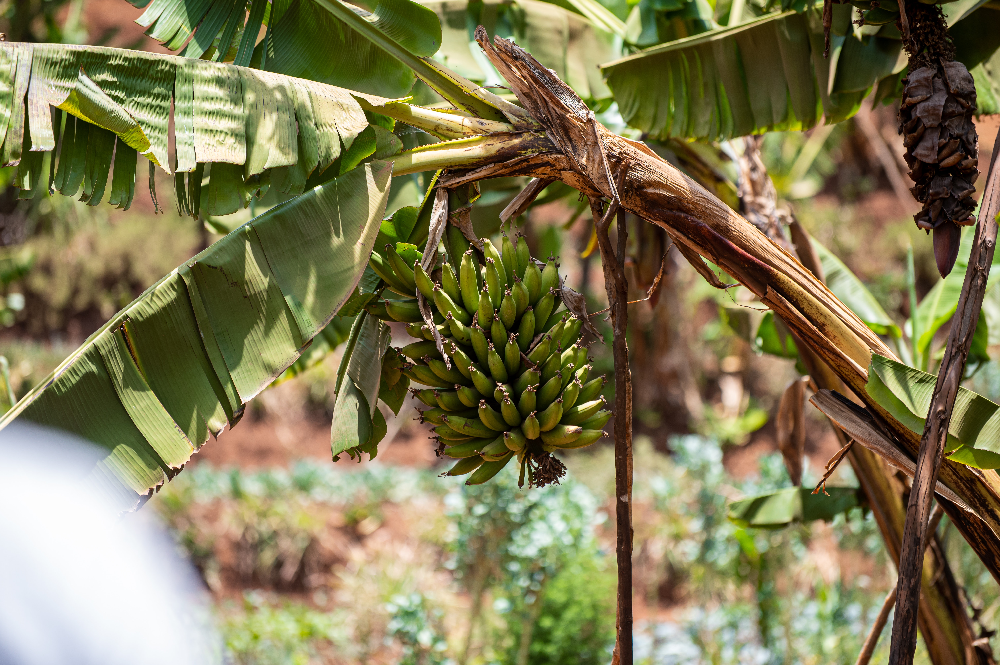
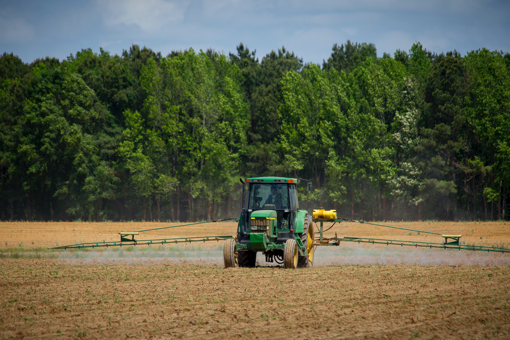
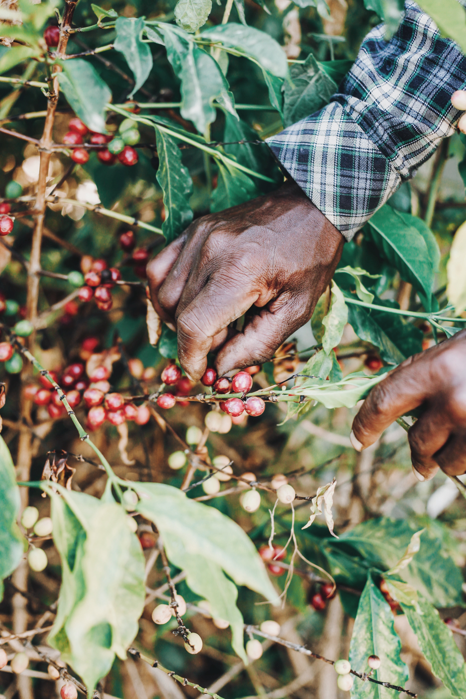

Os modelos de cultivo eficientes visam maximizar a produtividade das culturas enquanto otimizam o uso de recursos, como água e nutrientes. Exemplos desses modelos incluem:
Agricultura de precisão: utiliza tecnologias avançadas para monitorar e gerenciar as condições do solo e das culturas, permitindo uma aplicação mais precisa e eficiente de insumos agrícolas e uma maior produtividade.
Um trator equipado com sensores e GPS para realizar a agricultura de precisão.
Rotação de culturas: consiste em alternar diferentes tipos de culturas em uma mesma área, seguindo um planejamento prévio. Essa prática melhora a saúde do solo, aumenta a disponibilidade de nutrientes, reduz o uso de insumos químicos e previne pragas e doenças.

Uma plantação que utiliza rotação de culturas entre banana e milho.
Agricultura vertical: consiste em cultivar plantas em camadas verticais, aproveitando melhor o espaço e reduzindo a necessidade de água e solo. Essa prática pode ser realizada em ambientes fechados ou abertos, utilizando sistemas hidropônicos ou aeropônicos.

Uma estufa que utiliza agricultura vertical hidropônica.
Agrofloresta: consiste em integrar árvores e arbustos com culturas agrícolas e animais, criando um sistema diversificado e equilibrado. Essa prática promove a conservação do solo, da água e da biodiversidade, além de aumentar a renda e a segurança alimentar dos agricultores.

Uma agrofloresta que integra café, banana e outras espécies.
Essas práticas contribuem para uma agricultura mais sustentável, beneficiando tanto os agricultores quanto o meio ambiente.